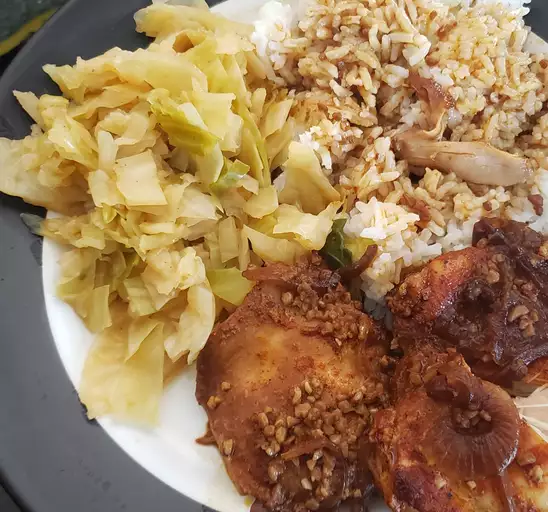

Chicken Adobo

Ingredients
- 4 tablespoons low-sodium soy sauce
- 2 jalapeno peppers, seeded and sliced
- 3 cloves fresh garlic, minced
- 1 pound chicken wings
- 2 tablespoons vegetable oil
- 1 ½ cups water
- 3 bay leaves
- 1 teaspoon whole peppercorns
- 2 tablespoons white vinegar
- 1 teaspoon white sugar, or to taste
- ¼ teaspoon fine salt, or to taste
Directions Step by Step
- Whisk soy sauce, jalapeno peppers, and garlic together in a large glass or ceramic bowl. Add chicken wings and toss to evenly coat. Cover the bowl with plastic wrap and marinate in the refrigerator for at least 1 hour.
- Remove chicken wings from the marinade and shake off excess. Reserve marinade.
- Heat oil in a large saucepan over medium heat. Place chicken wings in the hot oil and pan-fry for 2 minutes per side. Slowly pour in reserved marinade (including garlic) and water. Bring to a boil. Add bay leaves and peppercorns and simmer until chicken is tender, about 20 minutes. An instant-read thermometer inserted near the bone should read 165 degrees F (74 degrees C).
- Stir in vinegar and cook for 5 minutes. Stir again and season with sugar and salt to taste. Serve hot
For more infor/source:Click here